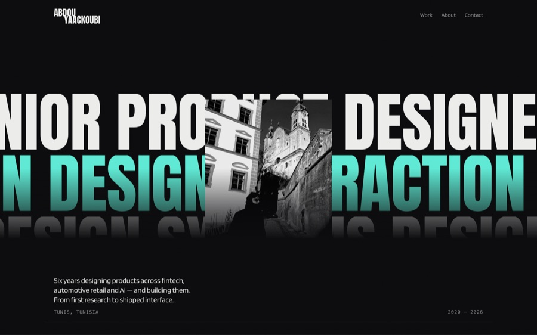

Project
This portfolio
Designed, built and tested by me — no framework
The site you are reading. I designed it in Figma and built it as a static site with its own generator: one JSON file per project, a Python script that writes every page, and a test suite that runs against the generated HTML. Built end to end with an AI-assisted workflow, which is how I work now — the fastest way I know to find out whether an interaction actually holds up is to build it.

42Tests against the generated HTML
0Runtime dependencies
7.3 KBJavaScript shipped